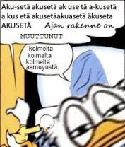

Simuloidulla todellisuudella tarkoitetaan tilaa, jossa koettu todellisuus tuotetaan keinotekoisesti esimerkiksi tietokoneen avulla, jolloin simuloitua maailmaa ei pysty erottamaan ”todellisesta” maailmasta. Simuloidussa todellisuudessa saattaisi olla itsensä olemassaolosta tietoisia mieliä, jotka joko tietävät tai eivät tiedä olevansa simuloidussa todellisuudessa. Nick Bostromin esittämän simulaatiohypoteesin mukaan elämme jo tällä hetkellä simulaatiossa. Simulaatiohypoteesilla on yhteisiä piirteitä uniargumentin ja Platonin luolavertauksen kanssa.

Der Fuehrer’s Face (suom. Führerin kasvot) on vuonna 1943 valmistunut lyhyt piirroselokuva, jonka on tuottanut The Walt Disney Company. Elokuvan työnimenä oli Donald Duck in Nutzi Land. Kyseessä on toisen maailmansodan aikainen sotapropagandaelokuva, joka pilkkaa natsi-Saksaa. Lyhytelokuvan pääosassa on Aku Ankka. Der Fuehrer’s Face voitti vuonna 1943 parhaan lyhytanimaation Oscar-palkinnon.